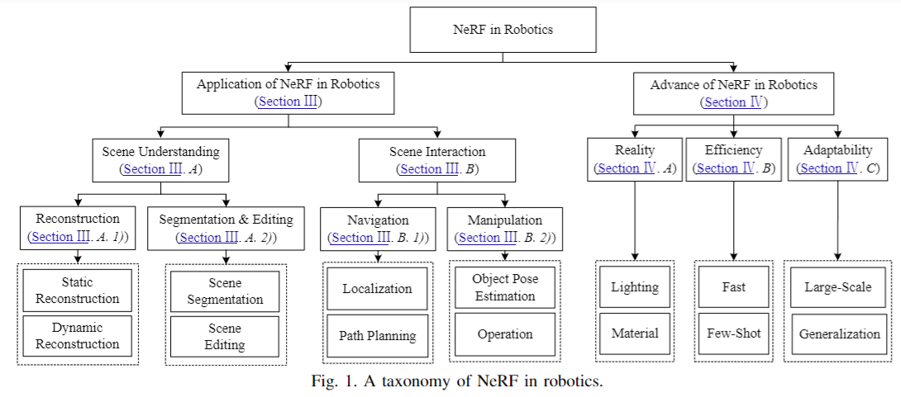

Group Lead
Dr Guangming Wang
Assistant Professor at the Cambridge-Ireland International Centre and Research Associate at the University of Cambridge; physical intelligence, robot world models, 3D vision, SLAM, and embodied AI.
Cambridge
A focused research group for physical intelligence, 3D robot perception, neural mapping, localization, and robotics for the built world.
Purpose
The Cambridge Robotics Group connects PIRLab research with the University of Cambridge ecosystem in engineering, computer vision, construction automation, and embodied AI.
The group emphasizes deployable perception: scene-level reconstruction, robust localization, dynamic mapping, 3D/4D representation learning, and robotic systems that work beyond clean laboratory settings.
Depth, LiDAR, RGB-D, point cloud learning, 2D-3D registration, segmentation, and object-level motion.
Dense semantic maps, neural implicit representations, localization, relocalization, and digital twin construction.
Robotics and AI methods for construction, infrastructure, spatial intelligence, and physical scene understanding.
Group Members
Group Lead
Assistant Professor at the Cambridge-Ireland International Centre and Research Associate at the University of Cambridge; physical intelligence, robot world models, 3D vision, SLAM, and embodied AI.

Cambridge Student
PhD student at Cambridge.

Cambridge Student
PhD student at Cambridge.

Cambridge Student
MPhil student at TUM.

Cambridge Student
PhD student at Cambridge.

Cambridge Student
MPhil student at TUM.

Cambridge Student
Undergraduate student at Cambridge.

Cambridge Student
Undergraduate student at Cambridge.

Cambridge Student
PhD student at Cardiff.

Cambridge Student
PhD student at Tsinghua University.

Cambridge Student
PhD student at Tsinghua University.
Group Co-Lead
Postdoctoral Research Associate at the University of Cambridge; 3D reconstruction, generative models, physical reasoning with 3DGS, and robotics.
Group Co-Lead
PhD Candidate in the CV4DT Research Group.

Cambridge Student
PhD student at Cambridge.
Researcher
PhD Candidate in the CV4DT Research Group.

Cambridge Student
Visiting student at Cambridge.

Cambridge Student
PhD student at TUM.

Cambridge Student
PhD student at Oxford.
Advisory Board

Advisor
Laing O'Rourke Associate Professor in Construction Engineering at Cambridge; intelligent underground construction and monitoring.
Advisor
Group Lead and Assistant Research Professor in CV4DT; 3D building reconstruction, digital twins, and construction robotics collaboration.
Representative work

Robotics survey
A field-level synthesis of neural radiance fields for robot perception, mapping, navigation, manipulation, and simulation.


Join
Students with backgrounds in 3D vision, SLAM, robotics, construction automation, simulation, or machine learning are encouraged to get in touch.
Contact